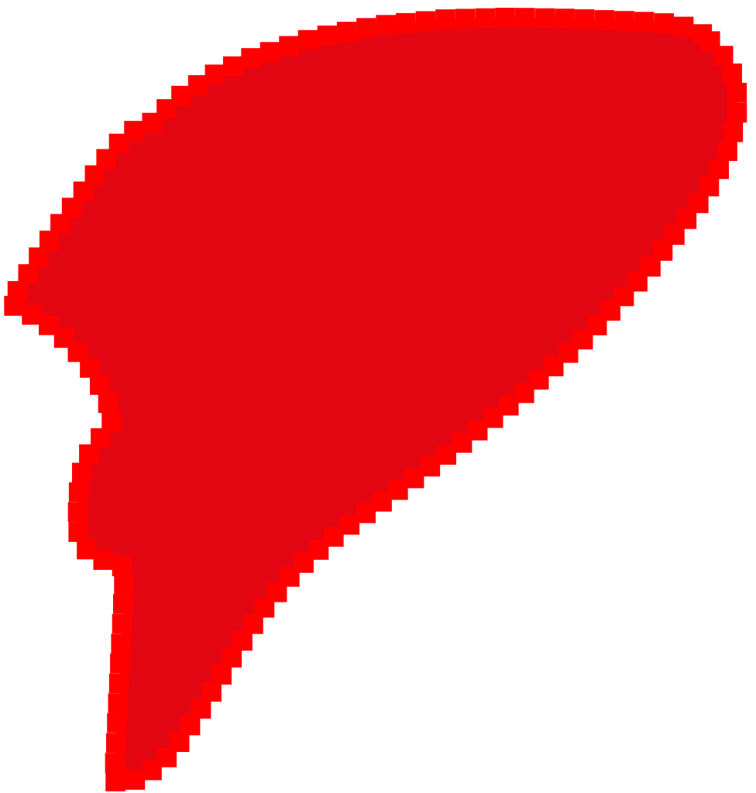
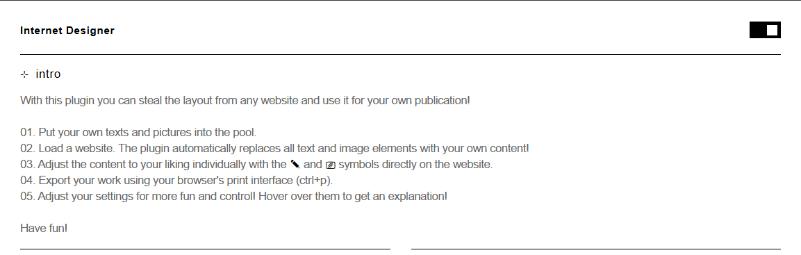
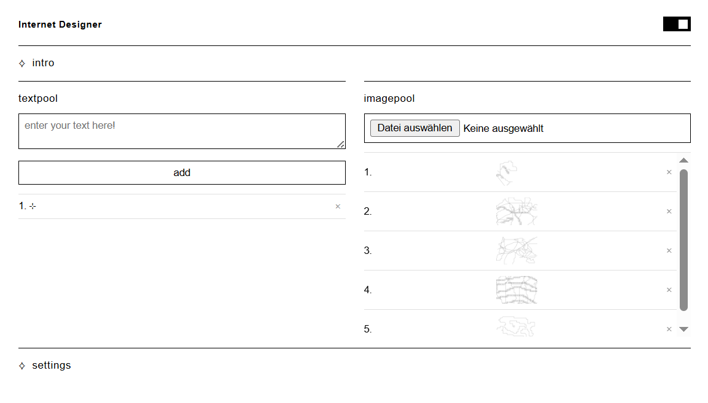
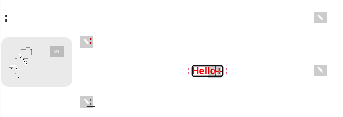
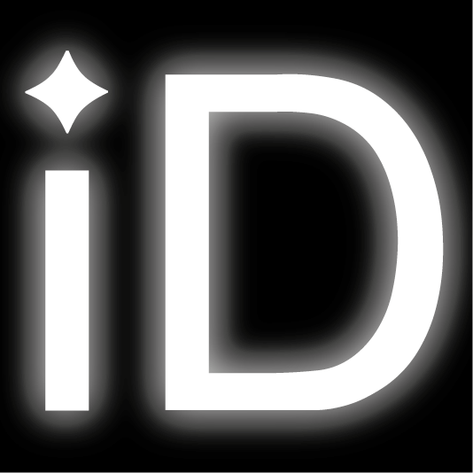
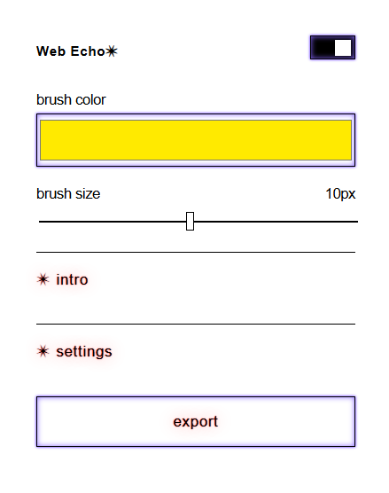
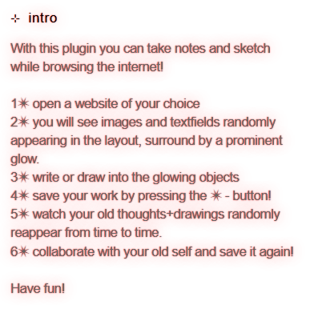
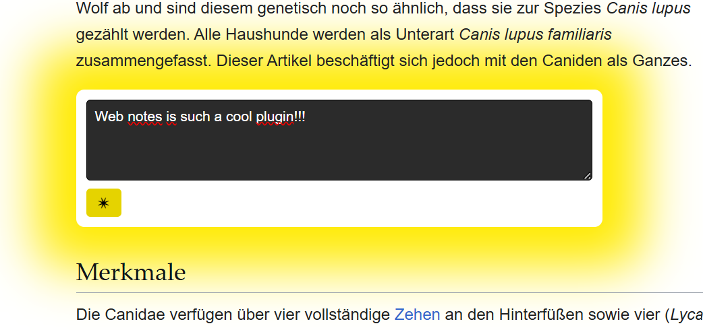
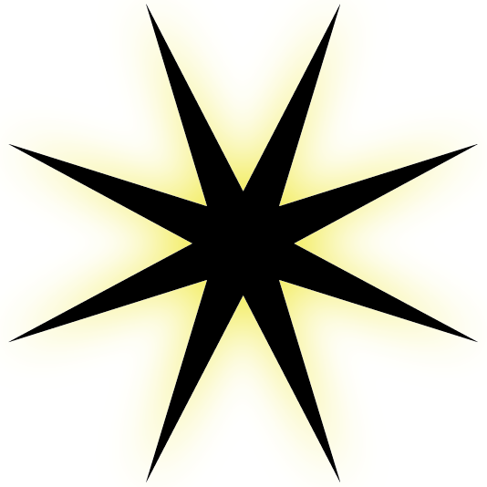

You're always seen together.
You talk every day.
It's always there to help you.
From the outside you and the world wide web must have the perfect relationship!
But just last week the rumour that you have lost your spark lately started spreading?
That it has gotten a bit one-sided?
And judging from my point of view it seems there might be some truth to it. It seems like the internet has gotten almost obsessive towards you.
It seems like it enjoys having control over you?
Then you slowly started telling me about the last years, everything that happened between you.
For instance, do you feel like the internet has been stalking you lately? Collecting so much data about you in your most intimate moments and storing them in places you don't even know about?
And it has gotten kind of passive between you lately - the internet tells you so much and you always have to listen. When are you the one that gets to talk? To create?
Sometimes you even fear the internet might cheat on you - or why does it keep on talking so much to these big platforms while you’re standing right next to it?
These plugins with the corresponding publication aim to be a starting point to help you two get back your spark! After all, you will hopefully have some new ideas on how to make your relationship to the internet better!
Because you two could definitely be beautiful together!!




The chrome browser plugin Internet Designer lets you steal the layout of any website and use it as a basis for your own publication!
While browsing it also collects all the text settings of the websites you visit and you can remix your current website with the fonts, size, etc of other websites you visited!
The publication "you + internet = <3?" on this site was made using this plugin!




The chrome browser plugin Web Echo generates random note fields as well as canvas for you to draw above images.
You can capture your thoughts and ideas right in your browser and collaborate with yourself when you get shown older notes and doodles you made!